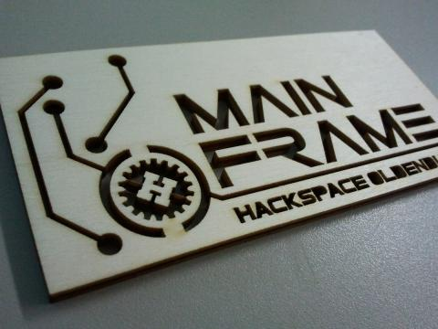
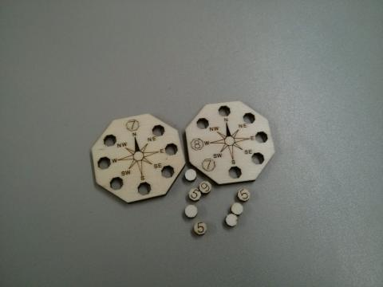
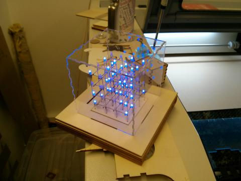
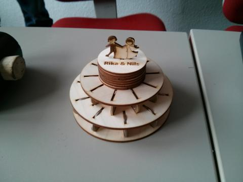
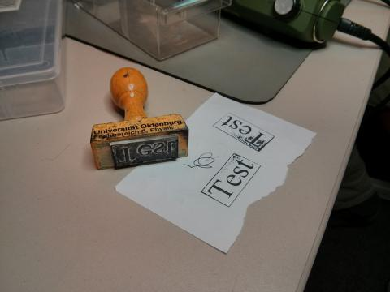
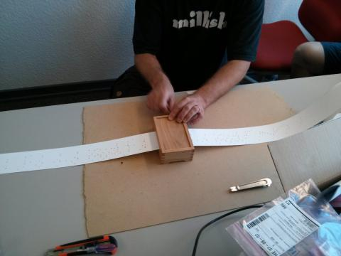
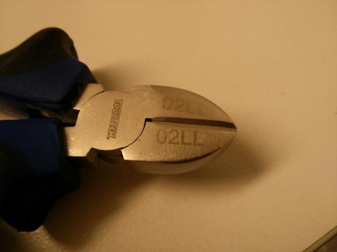

{% block mainbox %}
<div class="panel panel-default">
	<div class="panel-heading">
		<h3 class="panel-title">{{ resource.meta.title }}</h3>
	</div>
	<div class="panel-body">
{% filter markdown|typogrify -%}
In diesem Artikel möchte ich ein wenig über unsere wertvollste Machine im
Hackspace schreiben: Der Lasercutter. Was ist das, was macht man damit und was
machen wir damit?

## Erinnerung: Wir sind Laser!

Du weißt es bestimmt schon, aber wir haben seit einiger Zeit einen Lasercutter
(<a href="//de.wikipedia.org/wiki/Laserschneiden">Was ist das?</a>) haben. Als
kleine Auffrischung kannst du die Fotos von der beschwerlichen Lieferung
(19.12.2012) und dem ersten Betrieb angucken. Wirklich ein schönes Teil.

## Ergebnisse, Ergebnisse, Ergebnisse

Wir seit der Lieferung viel experimentiert und viele verschiedene Materialien
ausprobiert. Man könnte da fast schon Laserforschung schreiben. Nun möchte ich
ein paar Teile präsentieren, die in letzter Zeit aus dem Laser gepurzelt sind
und meiner Meinung nach sehr gelungen sind oder zumindest noch viel Potential
zeigen. Die folgenden Fotos findest du
<a href="/album.html#/a/Lasercutter/Ergebnisse">in hoher Auflösung hier</a>. 

<table class="table">
	<tr>
		<td></td>
		<td>Dünnes Holz schneiden. Keine große Kunst, sieht aber schon sehr hübsch aus.</td>
	</tr>
	<tr>
		<td></td>
		<td>Man muss natürlich nicht nur schneiden, gravieren geht auch! So sind dann schöne Kompasse für ein Spiel entstanden.</td>
	</tr>
	<tr>
		<td></td>
		<td>LEDs lasern wir nicht, aber das Holz und das Plexiglas wurden im Lasercutter passgenau ausgeschnitten.</td>
	</tr>
	<tr>
		<td></td>
		<td>Passgenau und graviertes Holz eignet sich auch prima für Geschenke und Dekoration.</td>
	</tr>
	<tr>
		<td></td>
		<td>Mehr Material probieren.... ah ... STEMPELGUMMI! Genau, mit dem Lasercutter kann man sehr schnell individuelle Stempel herstellen.</td>
	</tr>
	<tr>
		<td></td>
		<td>Es ist etwas schwer zu erkennen, hier haben wir eine mechanische Spieluhr. Dafür haben wir haben wir den Spielstreifen im Lasercutter gelocht. Kann man natürlich per auch Hand machen, so wie man auch einen Autoreifen mit den Mund aufpusten kann.</td>
	</tr>
	<tr>
		<td></td>
		<td>Zum Metallschneiden ist unser Laser leider zu schwach. Aber wir können es gravieren. So werden wir demnächst unser Werkzeug markieren.</td>
	</tr>
</table>

Das war es für den Anfang aus unserem Labor. Noch mehr Fotos und die oben in
besserer Qualität findest du
<a href="/album.html#/a/Lasercutter/Ergebnisse">in unserem Album</a>.

## Interesse, Fragen, Ideen? 

Habe ich dein Interesse geweckt? Hast du Fragen oder gar eigene Ideen? Dann
kommt doch vorbei und fragt uns! Es ist häufig jemand vom Laser-Team vor Ort
und kann euch helfen. Wenn du wirklich erst schreiben möchten, so kannst du
<a href="https://mailman.kreativitaet-trifft-technik.de/mailman/listinfo/diskussion">unsere Mailingliste</a>
abonieren und dort fragen.
{%- endfilter %}
		<div style="clear: both;"></div>
	</div>
</div>
{% endblock mainbox %}
